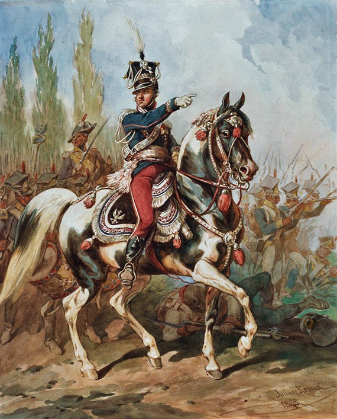
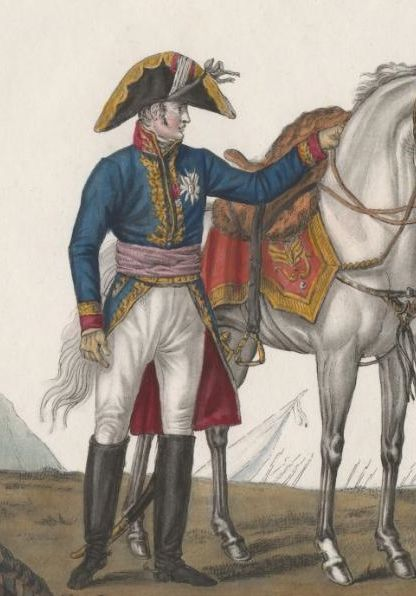
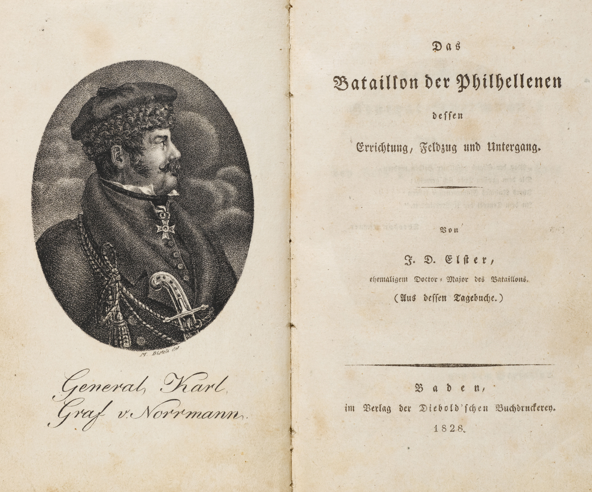
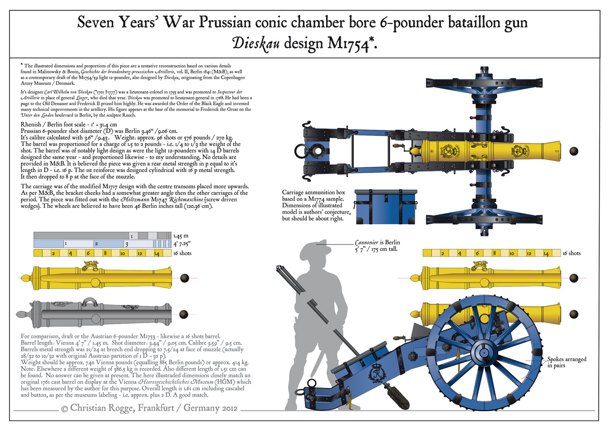
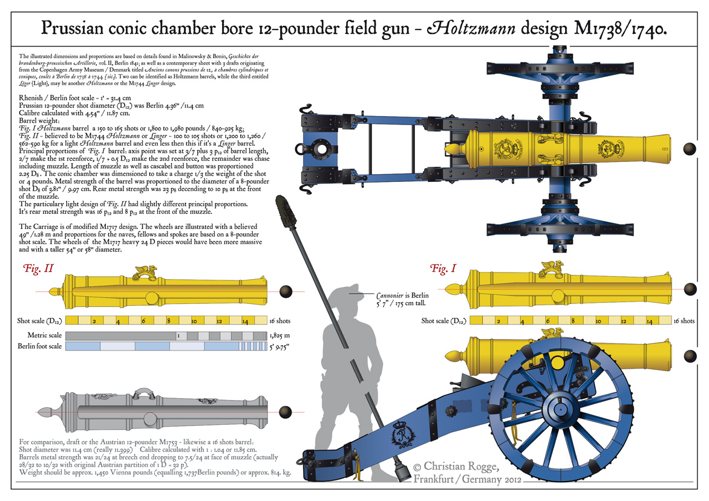

라이프치히 전투 (17) - 북쪽의 혈투
게시: 2025-09-15T06:30:30+09:00
일단 싸우기로 했으면 이겨야 했습니다. 그런데 마르몽 vs. 블뤼허는 처음부터 마르몽이 이길 수가 없는 싸움이었습니다. 마르몽은 1개 군단 1만7천에 불과했으나, 블뤼허는 4개 군단 5만4천을 거느리고 있었기 때문이었습니다. 그래서 더더욱 마르몽이 남쪽행을 멈추고 싸우기로 결정하기로 한 것이 아쉬운 결정이었다는 것입니다. 특히 더 아쉬운 점은 마르몽이 블뤼허의 대군을 상대로 생각보다 훨씬 더 잘 싸웠다는 것입니다. 이건 확실히 마르몽과 그 휘하의 제6군단이 실력파라는 것을 보여줍니다. 이 실력파 군단이 운명의 10월 16일에 꼭 필요했던 남쪽 전선에 계획대로 도달했다면 라이프치히 전투의 승패에 꽤 큰 영향을 줄 수도 있었습니다. 먼저, 마르몽이 거의 즉흥적으로 고른 뫼케른(Möckern)-비더릿쉬(Wiederitzsch) 방어선이 방어에 꽤 좋은 지형이었습니다. 앞서 언급한 것처럼 이 방어선은 직선 거리로 약 3km 정도의 길이이고, 양쪽 끝이 엘스터(Elster)강과 리트쉬커(Rietschke) 천으로 보호되어 있었으므로, 1만7천의 병력으로도 방어가 가능했습니다. 다만 우익을 보호해주어야 하는 리트쉬커 천은 좌익의 엘스터강과는 달리 작은 개천에 불과하여 적의 우회를 막아내기에 충분하지는 않았습니다. 이 불안한 우익을 지켜내기 위해 마르몽은 리트쉬커 천 건너편에 위치한 비더릿쉬 마을에 돔브로브스키(Jan Henryk Dąbrowski)의 폴란드 사단을 배치했습니다.

(돔브로브스키는 현대 폴란드 국가에도 그 이름이 나오는 유명 인사입니다. 그는 폴란드 군단이 살아있는 한, 폴란드는 죽은 것이 아니라는 생각을 가지고 있었고, 그 대의명분에 많은 폴란드 젊은이들이 몰려들었습니다. 하지만 그런 그의 명분은 나폴레옹에게 악용되어, 그렇게 조국 독립을 위해 몸을 던진 폴란드 젊은이들은 스페인이나 심지어 산토 도밍고 같은 엉뚱한 침략 전쟁에서 희생되어야 했습니다. 그리고 폴란드 군단이 존속된다면 폴란드도 존속하는 것이라는 그의 생각은 나폴레옹 몰락 이후에도 계속되어, 러시아의 짜르 알렉산드르가 그에게 이제 러시아 영토가 된 바르샤바 공국에서 폴란드인들로 구성된 군단의 편성을 의뢰하자, 그에 응하여 알렉산드르의 총애를 받는 장군이 되었습니다. 그래서 그 비슷한 시기의 다른 폴란드 애국자들, 가령 코시우스코(Tadeusz Kościuszko)나 포니아토프시키에 비하면 당대에는 폴란드인들로부터 비난도 꽤 많이 받았다고 합니다. 이 그림은 1880년대에 그려진 돔브로브스키의 모습으로서, 상당히 퉁퉁했던 실제 그의 모습과는 전혀 딴판입니다.) 아쉬운 점은 역시나 병력이 충분치는 않았으므로, 3개 사단을 전선에 다 배치하고 나니 예비대가 기병대 밖에 남지 않았다는 점이었습니다. 로르쥬(Jean Thomas Guillaume Lorge)가 지휘하는 제5기병사단과 노르만(Karl Friedrich von Normann)의 제25기병여단뿐이었는데, 제25기병여단은 그 지휘관인 노르만처럼 전원 뷔르템베르크 병사들로 이루어진 부대였습니다. 마르몽은 프랑스 기병대를 아끼려고 그랬는지 노르만의 기병여단을 최전선 바로 뒤쪽에 대기시켰고, 로르쥬의 기병사단은 훨씬 더 후방에 배치했습니다.

(로르쥬입니다. 그는 나폴레옹보다 2살 연상이었는데, 혁명 전인 1785년 18살의 나이로 용기병에 사병으로 입대했다는 것으로 보아 귀족 집안 출신은 아니었던 것 같습니다. 그나마 1791년 군에서 제대했다가 1792년에 대위 계급을 달고 재입대하여 네덜란드 일대에서 주로 싸웠습니다. 그는 이후에도 여러 싸움터를 전전했으나, 신통할 정도로 나폴레옹과는 선이 겹치지 않았고 덕분에 나폴레옹이 집권한 이후에는 별로 빛을 보지 못했습니다. 그는 스페인과 러시아 등 험한 곳에서 주로 싸웠고, 나폴레옹 폐위 이후에는 부르봉 왕가에 충성했습니다. 나폴레옹의 백일천하 때도 나폴레옹 편에 서지는 않았습니다.)

(노르만입니다. 그는 당시 뷔르템베르크 육군 소장의 계급이었지만 고작 29세의 젊은이였습니다. 그는 원래 뷔르템베르크 법률가의 아들로 태어나 15살의 나이로 오스트리아군에 입대한 뒤 거기서 장교직을 얻어 나폴레옹이 마렝고 전투 승리 이후 맺은 1801년 뤼네빌(Luneville) 조약 때까지 오스트리아군으로 복무했습니다. 이후 아버지의 배경을 이용하여 뷔르템베르크군으로 군적을 옮긴 뒤 빠르게 승진하여, 1812년 러시아 원정 때도 뷔르템베르크 기병연대장으로 참전했습니다. 나중에 보시겠지만, 노르만은 불과 2일 뒤 연합군 편으로 부대 단위의 배신을 감행했는데, 놀랍게도 이건 뷔르템베르크 국왕 프리드리히 1세와도 전혀 상의가 없는 개인 독단적인 행동이었습니다. 덕분에 그는 나폴레옹 몰락 이후에도 뷔르템베르크로의 귀국이 허용되지 않았고, 국왕 프리드리히 1세가 1817년 사망한 후에야 귀국할 수 있었는데, 그러고도 여전히 뷔르템베르크의 수도인 슈투트가르트로 들어오는 것은 금지되었다고 합니다. 그는 특이하게도 1822년 당시 오스만 투르크로부터 독립하기 위해 싸우던 그리스를 돕기 위해 개인 자격으로 건너가 싸우다가 참패한 이후 거기서 입은 부상으로 인해, 38세의 젊은 나이에 사망했습니다. 이 사진 속 책은 Das Bataillon der Philhellenen (그리스를 사랑하는 사람들의 대대)라는 1828년 발간된 서적인데, 노르만의 초상화가 표지에 실렸습니다.)
참고로 나폴레옹이 있던 남쪽 전선, 즉 마클리베르크부터 리버트볼크비츠로 이어지는 전선의 길이도 대략 9km였고, 나폴레옹은 그 방어에 3개 군단을 배치했습니다. 그러니까 당시 1개 군단은 약 3km 정도의 전선을 담당하는 것이 통상적이었습니다. 게다가 뫼케른-비더릿쉬 전선 서쪽, 그러니까 블뤼허의 부대들이 걸어서 접근해야 하는 3~4km 정도의 평원은 숲이 많지 않아 시계가 탁 트인 저지대였습니다. 즉, 대포로 제압하기에 딱 좋은 지형이었던 것입니다. 마르몽은 100문에 가까운 강력한 포병대 중 12파운드짜리 중포 12문을 포함한 84문을 뫼케른 마을 오른쪽의 야트막한 고지에 집중 배치하여 블뤼허를 막아설 생각이었습니다. 그리고 그 작전이 딱 들어 맞았습니다. 한편, 블뤼허는 마르몽이 린덴탈에서 미련 없이 물러나는 것을 보고 약간 어리둥절했고, 여전히 북동쪽 바트 뒤벤에서 내려올지도 모르는 그랑다르메 증원 병력을 경계하느라 선듯 추격에 나서지 못했습니다. 그가 조심스럽게 전진을 재개하여 마르몽이 급히 새로 구축한 뫼케른-비더릿쉬 전선에 도착한 것은 오후 2시가 넘어서였습니다. 블뤼허는 뫼케른 쪽에 요크의 프로이센 제1군단을, 비더릿쉬 쪽에 랑쥬롱의 러시아 군단을 투입했습니다. 비록 전체 4개 군단 중 2개 군단만 투입했을 뿐이었지만 그래도 병력은 블뤼허 쪽이 압도적으로 많았습니다. 그런데도 블뤼허는 이 임시 전선을 쉽게 뚫지 못했습니다. 특히 뫼케른 점령을 위해 자신들의 표현대로 '메뚜기처럼' 덤벼든 프로이센군은 큰 피해를 입고 물러나야 했습니다. 뫼케른 마을의 농가와 벽, 울타리, 창고 등을 매우 효율적으로 활용한 그랑다르메 병사들이 정말 집요하게 싸웠기 떄문이었습니다. 확실히 마르몽의 제6군단이 정예 병력이었던 것입니다. 게다가 야트막한 고지에서 쏟아지는 그랑다르메의 포격에 프로이센군은 여러 차례 돌격했지만 그때마다 피떡이 되어 물러설 수 밖에 없었습니다. 이렇게 탁 트인 평원에서 적의 포병에 가로막힌 경우 정석적인 공략 전술은 아군도 포병대를 동원하여 대(對)포병전을 펼치는 것이었습니다. 답답한 전황에 초조해진 요크는 최전선까지 직접 나아가 전황을 살펴본 뒤 대(對)포병전을 지시했는데, 그러는 와중에도 그랑다르메의 대포알들이 쏟아졌고, 그 중 한 발은 요크와 그의 참모들이 모여 서있던 한 가운데 떨어지기도 했습니다. 참모들이 기겁을 하며 놀라자, 요크는 차가운 눈빛으로 참모들을 째려봄으로써 그들의 공포를 진정시켰습니다. 그러면서 요크는 짐짓 아무렇지도 않은 척 하기 위해 주머니에서 코담배갑을 꺼내어 가루 담배를 한 꼬집 집어들었습니다. 그러나 그러는 와중에 대응 포격을 시작한 프로이센군의 포병대가 아무런 효과를 내지 못하는 것을 보고는 집어 들었던 그 코담배 가루를 집어던져야 했습니다. 먼저 도착한 프로이센군의 대포들은 6파운드 경포에 불과했기 떄문에, 12파운드 포탄을 날려보내는 그랑다르메 포병대에게 상대가 되지 않았던 것입니다. 결국 요크는 자신의 전체 포병대인 88문의 대포들을 모조리 뫼케른 마을 1km 이내에 전개시키고 '마치 그곳이 라이프치히 결전장인 것처럼' 전력을 다하여 모든 보병 연대들을 다 투입하며 혈투를 벌여야 했습니다.
 
(이건 7년 전쟁 당시의 프로이센군 6파운드포와 12파운드포를 묘사한 그림입니다. 6파운드니 12파운드니 하는 것은 포탄의 무게를 뜻하는 것으로서, 속까지 쇳덩이로 꽉 찬 구형탄(roundshot)의 무게입니다. 6파운드 포의 구경은 96mm, 12파운드 포의 구경은 121mm입니다. 6파운드 포의 유효 사거리는 대략 1km, 12파운드 포는 대략 1.2km 정도였습니다.) 결국 뫼케른 마을에서의 전투는 프로이센 포병대가 희대의 럭키샷을 기록하면서 프로이센측으로 기우는 듯 했습니다. 요크의 보병 대대들이 총공격을 가하는 가운데, 프로이센 포병대가 날린 폭발탄 중 하나가 뜻밖에도 그랑다르메 포병대의 탄약 수송차(caisson)에 명중하는 일이 발생했습니다. 하필 그 탄약 수송차에도 일반 구형탄(roundshot)이 아니라 속에 흑색화약이 가득 찬 폭발탄(bomb)이 가득 실려 있었으므로, 그 탄약 수송차는 큰 폭발을 일으켰고, 바로 근처의 다른 탄약 수송차 3대에 유폭을 일으켰습니다. 탄약 수송차 4대가 일으킨 대폭발은 그 일대의 그랑다르메 포병들이 일시적으로 무력화시켰고, 이 기회를 놓치지 않은 프로이센군은 그 화약 연기를 연막삼아 돌격했습니다. 여기서 마르몽의 병사들은 무너졌을까요? Source : The Life of Napoleon Bonaparte, by William Milligan Sloane Napoleon and the Struggle for Germany, by Leggiere, Michael V With Napoleon's Guns by Colonel Jean-Nicolas-Auguste Noël https://www.britannica.com/event/Napoleonic-Wars/Dispositions-for-the-autumn-campaign https://www.historyofwar.org/articles/battles_leipzig_16_october.html https://warhistory.org/@msw/article/leipzig-battle-of-the-nations https://www.napolun.com/mirror/napoleonistyka.atspace.com/Leipzig_battle.htm https://en.wikipedia.org/wiki/Jan_Henryk_D%C4%85browski https://www.frenchempire.net/biographies/lorge/ https://www.whosdatedwho.com/dating/jean-thomas-guillaume-lorge https://fr.wikipedia.org/wiki/Karl_von_Normann-Ehrenfels https://crogges7ywarmies.blogspot.com/2012/09/prussian-7yw-artillery-scale-drawings.html